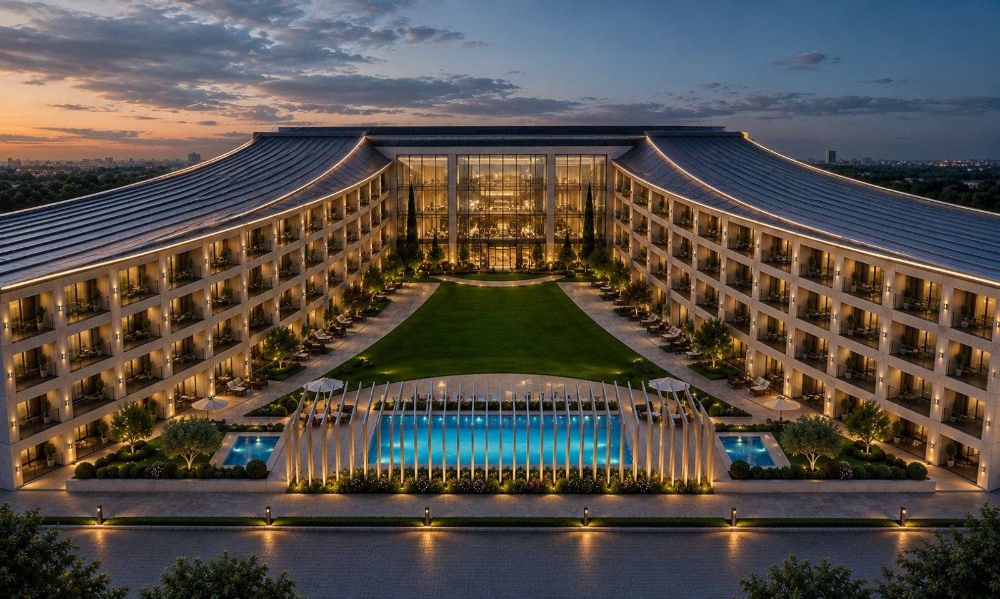
Aris Legacy / Designs
Three architectural directions have been drawn for the site. A final direction has not been selected.
Design & 3D visualisation
The Aris Legacy Hotel is being thoughtfully designed to bring its sports, entertainment and media identity to life through an innovative architectural and 3D design process.
From the overall building concept and exterior architecture to guest rooms, public spaces, entertainment venues and sports-themed amenities, advanced 3D modelling and visualisation allow the development team to experience and refine the property before construction begins.
This process gives investors, partners and future guests a realistic vision of the Aris Legacy experience, while helping ensure that every element of the hotel reflects its distinctive brand and creates a memorable destination in Atlanta.
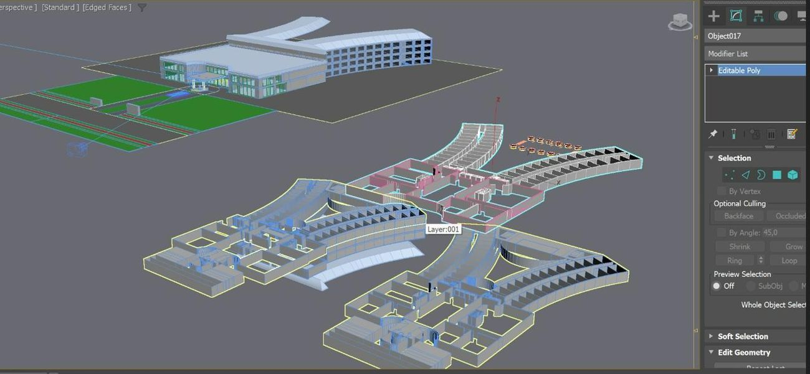
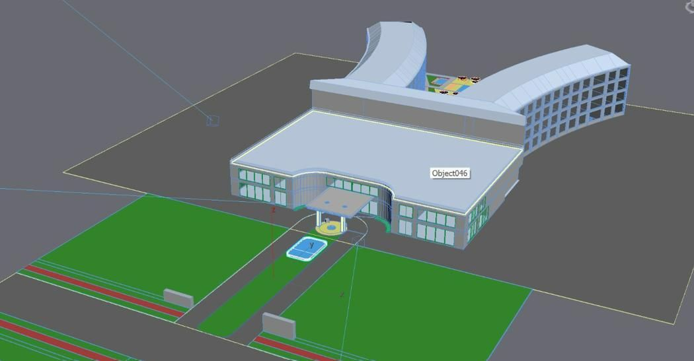
Design Series 1
Concept · Under reviewA colonnaded centre block flanked by two sweeping guest wings, approached through a grand circular driveway and fountain, with surface parking held to either side and the carved monument set on the roadside lawn.

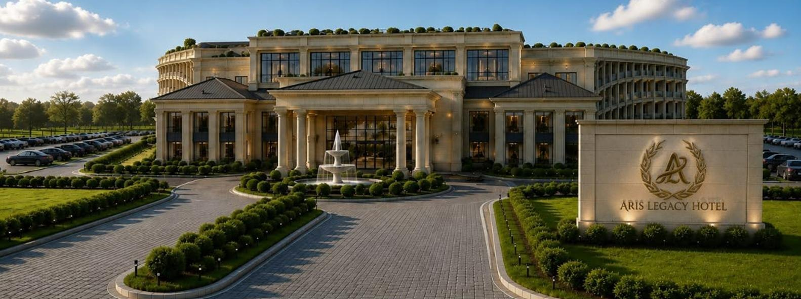
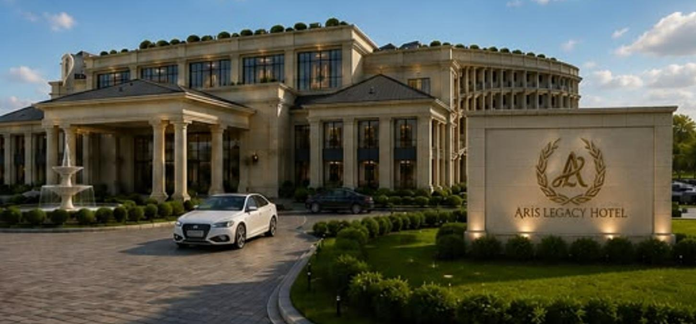
01 / 4
View full size
Design Series 2
Concept · Under reviewA civic travertine mass with a full-height colonnade, set behind a long reflecting canal that runs from the roadside monument to the fountain at the door. Verdigris pergolas structure the second-floor terrace, and the guest wings return behind a rear pool court.
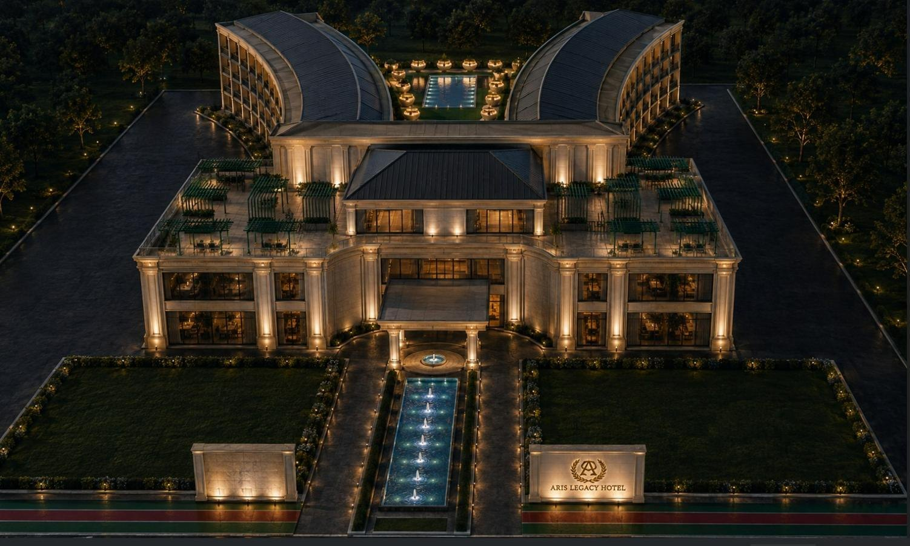
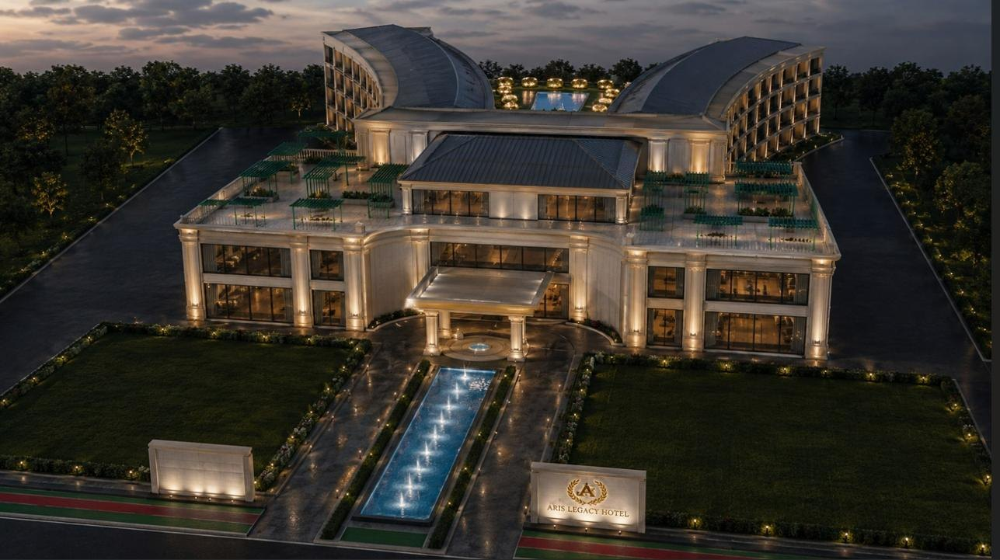
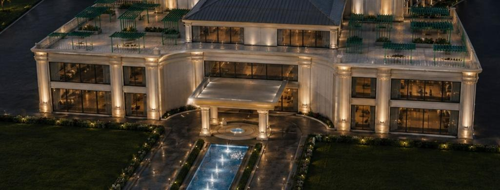
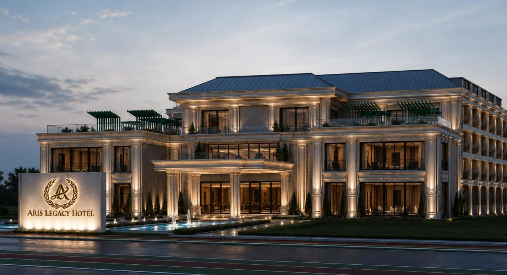
01 / 4
View full size
Design Series 3
Concept · Under reviewClean lines and a contemporary aesthetic define the architecture, complemented by expansive glass elements that create a sleek, open and sophisticated appearance. The grand front entrance and circular driveway provide an elegant arrival experience, while the thoughtful use of glass brings natural light into the space and connects the interior with the surrounding environment.
The Aris Legacy Hotel will showcase a blend of contemporary elegance with bold sports and entertainment-inspired design, creating a distinctive visual identity from the moment guests arrive. Carefully crafted details, dramatic architectural elements, sophisticated materials and thoughtfully designed interior spaces will create an atmosphere that is both luxurious and energetic.
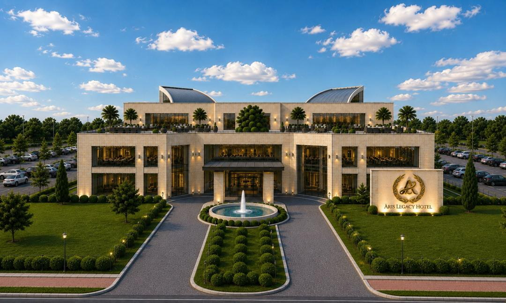
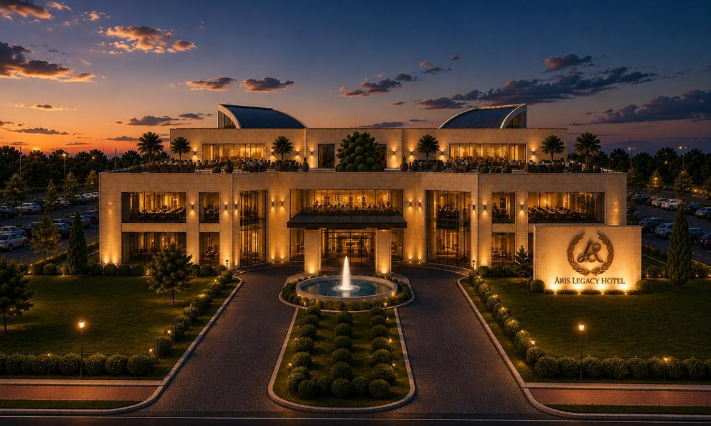
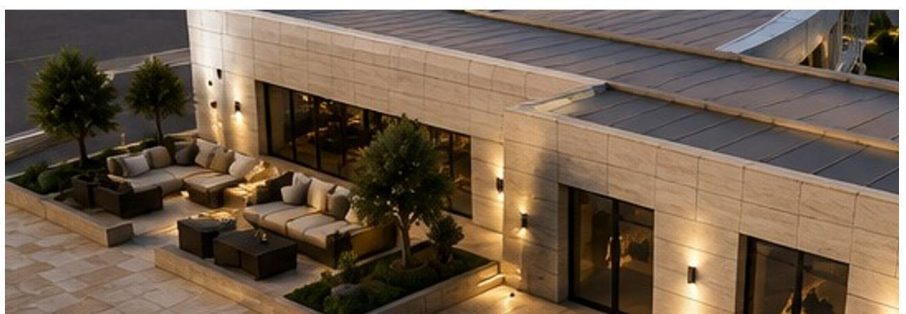
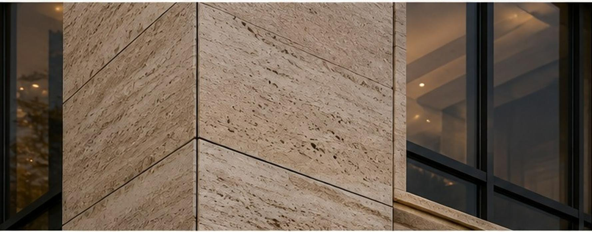

01 / 10
View full size
All three series are concepts under study. A final architectural direction has not been selected, and every image on this page is an artist's impression rather than a construction drawing. Design, specification and programming remain subject to change as the project advances through design, engineering and permitting.